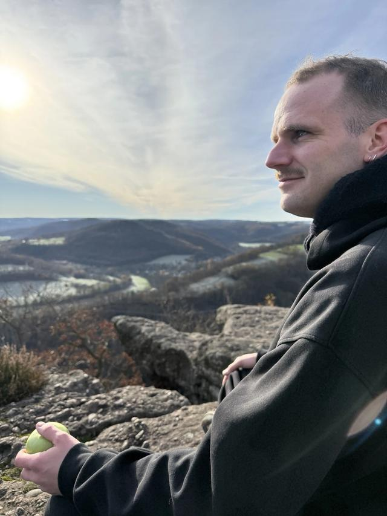

Wie ik ben
Over mij
Ik combineer directie-ervaring met hands-on projectwerk in de gebouwde omgeving en energietransitie.

Ik werk al jaren in de gebouwde omgeving en energietransitie. Bij REL Groep was ik directielid Intern in de Koers-cirkel: verantwoordelijk voor People, Legal/Risk en het operating system van de organisatie, naast strategische projecten met de directie.
Nu bouw ik mijn eigen praktijk op: projecten met kop en staart, maximaal twee of drie naast elkaar. Meer energie voor inhoud die ertoe doet, en ruimte om te blijven leren.
Vanaf januari 2027 doe ik dit voltijds. In 2026 pak ik al opdrachten op die daarbij passen.
- Gebouwde omgeving
- Energietransitie
- Aanbestedingen
Waar ik in geloof
- Oprechtheid boven het wenselijke antwoord
- Vindingrijkheid boven het vertrouwde
- Energie boven uurtje factuurtje
- Snel leren boven niet in beweging komen
Wist je dat
- ik sinds 2024 gastdocent energietransitie en circulariteit ben bij Hogeschool Rotterdam en de Universiteit van Amsterdam?
- ik sinds 2018 ambassadeur ben van de Klimaat en Energie Koepel, en daar eerder sectorlead gebouwde omgeving was?
- ik in 2020 in de ABN AMRO Duurzame top 50 stond?
- ik in 2013 de afstudeerprijs Bouwkunde van de Hanzehogeschool won?
- ik ook als DJ draai? Ook daar geldt: snel leren, en nieuwe dingen echt oppakken. Meer op late2theparty.nl.
Loopbaan
Tijdlijn
-
2008 tot 2015
Opleiding, Hanzehogeschool en Rijksuniversiteit Groningen
Bachelor Bouwkunde aan de Hanzehogeschool Groningen. Daarna twee masters aan de Rijksuniversiteit Groningen: Sociale Planologie en Culturele Geografie.
-
2015 tot 2020
Project- en programmamanagement, NAM en FME
Bij NAM opdrachtgevers en aannemers begeleid naar aardbevingsbestendige nieuwbouw in Groningen. Bij FME eerst projectmanager, daarna programmamanager gebouwde omgeving: innovatietrajecten met technologieleveranciers en overheden, en belangenbehartiging voor lidbedrijven.
-
2020 tot 2027
Senior adviseur energietransitie en directielid, REL
Liever even spreken?
Mail me voor een kennismaking van 30 minuten. Dan hoor ik wat er speelt en zeg ik echt of ik de juiste persoon ben.